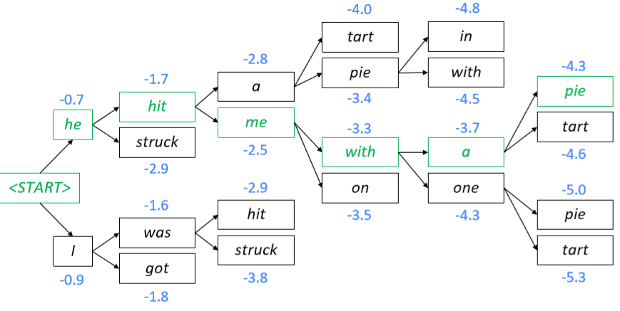
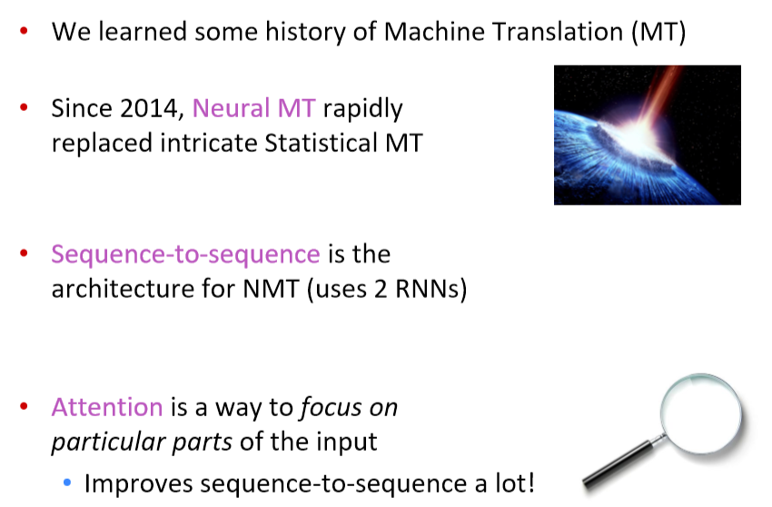

08 Machine Translation, Sequence-to-sequence and Attention
Lecture 08 Machine Translation, Sequence-to-sequence and Attention¶
Lecture Plan
- 引入新任务：机器翻译
- 引入一种新的神经结构：sequence-to-sequence
- 机器翻译是sequence-to-sequence的一个主要用例
- 引入一种新的神经技术：注意力
- sequence-to-sequence通过attention得到提升
Section 1: Pre-Neural Machine Translation¶
Machine Translation
机器翻译(MT)是将一个句子 x 从一种语言( 源语言 )转换为另一种语言( 目标语言 )的句子 y 的任务。

1950s: Early Machine Translation
机器翻译研究始于20世纪50年代初。
- 俄语 \to 英语(冷战的推动)
- 系统主要是基于规则的，使用双语词典来讲俄语单词映射为对应的英语部分
1990s-2010s: Statistical Machine Translation
- 核心想法：从数据中学习概率模型。
- 假设我们正在翻译法语 \to 英语。
- 我们想要找到最好的英语句子 y ，给定法语句子 x
- 使用Bayes规则将其分解为两个组件从而分别学习
- P(x|y)
- 翻译模型
- 分析单词和短语应该如何翻译(逼真)
- 从并行数据中学习
-
P(y)
- 语言模型
- 模型如何写出好英语(流利)
- 从单语数据中学习
-
问题：如何学习翻译模型 P(x|y)
- 首先，需要大量的并行数据(例如成对的人工翻译的法语/英语句子)
Learning alignment for SMT
- 问题：如何从并行语料库中学习翻译模型 P(x|y)
- 进一步分解:我们实际上想要考虑
- a 是对齐，即法语句子 x 和英语句子 y 之间的单词级对应
What is alignment?
对齐是翻译句子中特定词语之间的对应关系。
- 注意：有些词没有对应词

Alignment is complex
对齐可以是多对一的

对齐可以是一对多的

有些词很丰富


对齐可以是多对多(短语级)

Learning alignment for SMT
- 我们学习很多因素的组合，包括
- 特定单词对齐的概率(也取决于发送位置)
- 特定单词具有特定生育率的概率(对应单词的数量)
- 等等
Decoding for SMT
问题 ：如何计算argmax
- 我们可以列举所有可能的 y 并计算概率？\to 太贵了
- 使用启发式搜索算法搜索最佳翻译，丢弃概率过低的假设
- 这个过程称为解码


- SMT是一个巨大的研究领域
- 最好的系统非常复杂
- 数以百计的重要细节我们还没有提到
- 系统有许多分别设计子组件工程
- 很多功能需要设计特性来获取特定的语言现象
- 需要编译和维护额外的资源
- 比如等价短语表
- 需要大量的人力来维护
- 对于每一对语言都需要重复操作
Section 2: Neural Machine Translation¶
What is Neural Machine Translation?
-
神经机器翻译是利用单个神经网络进行机器翻译的一种方法
-
神经网络架构称为sequence-to-sequence (又名seq2seq)，它包含两个RNNs
Neural Machine Translation (NMT)

- 编码器RNN生成源语句的编码
- 源语句的编码为解码器RNN提供初始隐藏状态
- 解码器RNN是一种以编码为条件生成目标句的语言模型
- 注意：此图显示了测试时行为 \to 解码器输出作为下一步的输入
Sequence-to-sequence is versatile!
- 序列到序列不仅仅对MT有用
-
许多NLP任务可以按照顺序进行表达
- 摘要(长文本 \to 短文本)
- 对话(前一句话 \to 下一句话)
- 解析(输入文本 \to 输出解析为序列)
- 代码生成(自然语言 \to Python代码)
-
sequence-to-sequence 模型是 Conditional Language Model 条件语言模型的一个例子
- 语言模型，因为解码器正在预测目标句的下一个单词 y
- 有条件的，因为它的预测也取决于源句 x
- NMT直接计算 P(y|x)
- 上式中最后一项为，给定到目前为止的目标词和源句 x ，下一个目标词的概率
- 问题 ：如何培训NMT系统？
- 回答 ：找一个大的平行语料库

- Seq2seq被优化为一个单一的系统。反向传播运行在“端到端”中
Greedy decoding
- 我们了解了如何生成(或“解码”)目标句，通过对解码器的每个步骤使用 argmax

- 这是贪婪解码(每一步都取最可能的单词)
- 这种方法有问题吗？
Problems with greedy decoding
- 贪婪解码没有办法撤销决定

- 如何修复？
Exhaustive search decoding
-
理想情况下，我们想要找到一个(长度为 T )的翻译 y 使其最大化
-
我们可以尝试计算所有可能的序列 y
- 这意味着在解码器的每一步 t ，我们跟踪 V^t 个可能的部分翻译，其中 V 是 vocab 大小
- 这种 O(V^T) 的复杂性太昂贵了！
Beam search decoding
- 核心思想 ：在解码器的每一步，跟踪 k 个最可能的部分翻译(我们称之为 hypotheses 假设 )
- k是Beam的大小(实际中大约是5到10)
- 假设 y_{1}, \dots, y_{t} 有一个分数，即它的对数概率
- 分数都是负数，分数越高越好
- 我们寻找得分较高的假设，跟踪每一步的 top k 个部分翻译
- 波束搜索 不一定能 找到最优解
- 但比穷举搜索效率高得多
Beam search decoding: example
Beam size = k = 2
蓝色的数字是 \operatorname{score}\left(y_{1}, \ldots, y_{t}\right)=\sum_{i=1}^{t} \log P_{\operatorname{LM}}\left(y_{i} | y_{1}, \ldots, y_{i-1}, x\right) 的结果
- 计算下一个单词的概率分布
- 取前k个单词并计算分数
- 对于每一次的 k 个假设，找出最前面的 k 个单词并计算分数
- 在 k^2 的假设中，保留 k 个最高的分值，如 t = 2 时，保留分数最高的 hit 和 was

Beam search decoding: stopping criterion
- 在贪心解码中，我们通常解码到模型产生一个 \text{<END>} 令牌
- 例如:\text{<START>} he hit me with a pie \text{<END>}
- 在 Beam Search 解码中，不同的假设可能在不同的时间步长上产生 \text{<END>} 令牌
- 当一个假设生成了 \text{<END>} 令牌，该假设完成
- 把它放在一边，通过 Beam Search 继续探索其他假设
- 通常我们继续进行 Beam Search ，直到
- 我们到达时间步长 T (其中 T 是预定义截止点)
- 我们至少有 n 个已完成的假设(其中 n 是预定义截止点)
Beam search decoding: finishing up
- 我们有完整的假设列表
- 如何选择得分最高的？
- 我们清单上的每个假设 y_{1}, \dots, y_{t} 都有一个分数
- 问题在于 ：较长的假设得分较低
- 修正 ：按长度标准化。用下式来选择top one
Advantages of NMT
与SMT相比，NMT有很多优点
- 更好的性能
- 更流利
- 更好地使用上下文
- 更好地使用短语相似性
- 单个神经网络端到端优化
- 没有子组件需要单独优化
- 对所有语言对使用相同的方法
Disadvantages of NMT?
SMT相比
- NMT的可解释性较差
- 难以调试
- NMT很难控制
- 例如，不能轻松指定翻译规则或指南
- 安全问题
How do we evaluate Machine Translation?
BLEU (Bilingual Evaluation Understudy)
- 你将会在 Assignment 4 中看到BLEU的细节
- BLEU将机器翻译和人工翻译(一个或多个)，并计算一个相似的分数
- n-gram 精度 (通常为1-4)
- 对过于短的机器翻译的加上惩罚
- BLEU很有用,但不完美
- 有很多有效的方法来翻译一个句子
- 所以一个好的翻译可以得到一个糟糕的BLEU score，因为它与人工翻译的n-gram重叠较低
MT progress over time

NMT: the biggest success story of NLP Deep Learning
神经机器翻译于2014年从边缘研究活动到2016年成为领先标准方法
- 2014：第一篇 seq2seq 的文章发布
- 2016：谷歌翻译从 SMT 换成了 NMT
- 这是惊人的
- 由数百名工程师历经多年打造的SMT系统，在短短几个月内就被少数工程师训练过的NMT系统超越
So is Machine Translation solved?
- 不！
-
许多困难仍然存在
- 词表外的单词处理
- 训练和测试数据之间的 领域不匹配
- 在较长文本上维护上下文
- 资源较低的语言对
-
使用常识仍然很难

- NMT在训练数据中发现偏差

- 无法解释的系统会做一些奇怪的事情

NMT research continues
NMT是NLP深度学习的核心任务
- NMT研究引领了NLP深度学习的许多最新创新
- 2019年：NMT研究将继续蓬勃发展
- 研究人员发现，对于我们今天介绍的普通seq2seq NMT系统，有很多、很多的改进。
- 但有一个改进是如此不可或缺

Section 3: Attention¶
Sequence-to-sequence: the bottleneck problem

- 源语句的编码需要捕获关于源语句的所有信息
- 信息瓶颈！
Attention
- 注意力为瓶颈问题提供了一个解决方案
- 核心理念 ：在解码器的每一步，使用 与编码器的直接连接 来专注于源序列的特定部分
- 首先我们将通过图表展示(没有方程)，然后我们将用方程展示

- 将解码器部分的第一个token \text{<START>} 与源语句中的每一个时间步的隐藏状态进行 Dot Product 得到每一时间步的分数
- 通过softmax将分数转化为概率分布
- 在这个解码器时间步长上，我们主要关注第一个编码器隐藏状态(“he”)

- 利用注意力分布对编码器的隐藏状态进行加权求和
- 注意力输出主要包含来自于受到高度关注的隐藏状态的信息

- 连接的 注意力输出 与 解码器隐藏状态 ，然后用来计算 \hat y_1

- 有时，我们从前面的步骤中提取注意力输出，并将其输入解码器(连同通常的解码器输入)。我们在作业4中做这个。

Attention: in equations
- 我们有编码器隐藏状态 h_{1}, \ldots, h_{N} \in \mathbb{R}^{h}
- 在时间步 t 上，我们有解码器隐藏状态 s_{t} \in \mathbb{R}^{h}
- 我们得到这一步的注意分数
- 我们使用softmax得到这一步的注意分布 \alpha^{t} (这是一个概率分布，和为1)
- 我们使用 \alpha^{t} 来获得编码器隐藏状态的加权和，得到注意力输出 \boldsymbol{a}_{t}
- 最后，我们将注意输出 \boldsymbol{a}_{t} 与解码器隐藏状态连接起来，并按照非注意seq2seq模型继续进行
Attention is great
- 注意力显著提高了NMT性能
- 这是非常有用的，让解码器专注于某些部分的源语句
- 注意力解决瓶颈问题
- 注意力允许解码器直接查看源语句；绕过瓶颈
- 注意力帮助消失梯度问题
- 提供了通往遥远状态的捷径
- 注意力提供了一些可解释性
- 通过检查注意力的分布，我们可以看到解码器在关注什么
- 我们可以免费得到(软)对齐
- 这很酷，因为我们从来没有明确训练过对齐系统
- 网络只是自主学习了对齐
Attention is a general Deep Learning technique
- 我们已经看到，注意力是改进机器翻译的序列到序列模型的一个很好的方法
- 然而 ：您可以在许多体系结构(不仅仅是seq2seq)和许多任务(不仅仅是MT)中使用注意力
- 注意力的更一般定义
- 给定一组向量 值 和一个向量 查询 ，注意力是一种根据查询，计算值的加权和的技术
- 我们有时说 query attends to the values
-
例如，在seq2seq + attention模型中，每个解码器的隐藏状态(查询)关注所有编码器的隐藏状态(值)
-
直觉
- 加权和是值中包含的信息的选择性汇总，查询在其中确定要关注哪些值
- 注意是一种获取任意一组表示(值)的固定大小表示的方法，依赖于其他一些表示(查询)。
There are several attention variants
-
我们有一些值 \boldsymbol{h}_{1}, \ldots, \boldsymbol{h}_{N} \in \mathbb{R}^{d_{1}} 和一个查询 s \in \mathbb{R}^{d_{2}}
-
注意力总是包括
-
计算注意力得分 e \in \mathbb{R}^{N} （很多种计算方式）
-
采取softmax来获得注意力分布 \alpha
\alpha=\operatorname{softmax}(\boldsymbol{e}) \in \mathbb{R}^{N} -
使用注意力分布对值进行加权求和：从而得到注意输出 \boldsymbol{a} (有时称为上下文向量)
\boldsymbol{a}=\sum_{i=1}^{N} \alpha_{i} \boldsymbol{h}_{i} \in \mathbb{R}^{d_{1}}
-
Attention variants
有几种方法可以从 \boldsymbol{h}_{1}, \ldots, \boldsymbol{h}_{N} \in \mathbb{R}^{d_{1}} 计算 e \in \mathbb{R}^{N} 和 \boldsymbol{s} \in \mathbb{R}^{d_{2}}
- 基本的点乘注意力 \boldsymbol{e}_{i}=\boldsymbol{s}^{T} \boldsymbol{h}_{i} \in \mathbb{R}
- 注意：这里假设 d_1 = d_2
- 这是我们之前看到的版本
- 乘法注意力 e_{i}=s^{T} \boldsymbol{W} \boldsymbol{h}_{i} \in \mathbb{R}
- \boldsymbol{W} \in \mathbb{R}^{d_{2} \times d_{1}} 是权重矩阵
-
加法注意力 e_{i}=\boldsymbol{v}^{T} \tanh \left(\boldsymbol{W}_{1} \boldsymbol{h}_{i}+\boldsymbol{W}_{2} \boldsymbol{s}\right) \in \mathbb{R}
- 其中 \boldsymbol{W}_{1} \in \mathbb{R}^{d_{3} \times d_{1}}, \boldsymbol{W}_{2} \in \mathbb{R}^{d_{3} \times d_{2}} 是权重矩阵，\boldsymbol{v} \in \mathbb{R}^{d_{3}} 是权重向量
- d_3(注意力维度)是一个超参数
-
你们将在作业4中考虑这些的相对优势/劣势！
Summary of today’s lecture

Notes 06 Neural Machine Translation, Seq2seq and Attention¶
Keyphrases: Seq2Seq and Attention Mechanisms, Neural Machine Translation, Speech Processing
1 Neural Machine Translation with Seq2Seq¶
到目前为止，我们已经处理了预测单个输出的问题：一个单词的 NER 标签，在一个句子中根据前面的单词来预测下一个最可能的单词，等等。然而有一类的 NLP 任务是依赖序列输出的，或者输出是长度变化的序列。例如：
- Translation ：将一种语言的一个句子作为输入，然后输出是另外一种语言的相同的意思的句子。
- Conversation ：以陈述或问题作为输入并作出回应。
- Summarization ：将大量文本作为输入并输出其摘要。
在下面的部分，我们将介绍 Seq2Seq 模型，一个用来处理上述问题的深度学习框架。这个框架被证明了是非常有效的，在不到三年的时间里成为了机器翻译的标准方法。
1.1 Brief Note on Historical Approaches
在过去，翻译系统是基于概率模型构建的
- 一个 翻译模型 ，告诉我们一个源语言中最有可能被翻译为的句子/短语。
- 一个 语言模型 ，告诉我们给定句子/短语的整体可能性。
这些组成部分用于构建基于单词或短语的翻译系统。正如你所想到的，一个简单的的基于单词的翻译系统将完全不能捕获语言之间的排序差异（例如，否定词移动，句子中的主语和动词的位置等）。
基于短语的翻译系统在 Seq2Seq 之前是非常常见的。基于短语的翻译系统可以根据短语序列考虑输入和输出，相比比基于词的系统可以处理更复杂的语法。然而，在基于短语的翻译系统仍然难以捕获长距离的信息。
Seq2Seq 带来很大的优势，尤其是使用 LSTM，现代翻译系统可以在观测到整个输入后生成任意的输出序列。他们甚至可以自动地专注于输入的特定部分，以帮助生成有用的翻译。
1.2 Sequence-to-sequence Basics
序列到序列，或者 Seq2Seq，是一个比较新的模型，在 2014 年被提出用英语-法语翻译。在更高的层面上，Seq2Seq 是一个有两个RNN组成的端到端模型
- 一个 encoder 编码器，将模型的输入序列作为输入，然后编码固定大小的“上下文向量”。
- 一个 decoder 解码器，使用来自编码器生成的上下文向量作为从其生成输出序列的“种子”。
因此，Seq2Seq 模型通常被称为“编码器-解码器模型”。接下来我们将分别讨论这两个网络的细节。
1.3 Seq2Seq architecture - encoder
编码器网络的作用是读取输入序列到我们的 Seq2Seq 模型中，然后对该序列生成一个固定维度的上下文向量 C 。为此，编码器使用一个循环神经网络单元——一般使用 LSTM——每个时间步读取一个输入单词。单元的最终隐藏状态就是 C 。然而，因为将一个任意长度序列压缩到一个单一固定大小的向量是很困难的（特别是像翻译这样的困难任务），编码器通常由堆叠的 LSTM 组成：一系列 LSTM“层”，其中每层的输出是下一层的输入序列。LSTM 最后一层的最终隐藏状态就是 C 。
Seq2Seq 编码器通常会做一些奇怪的事情：它们将反向处理输入序列。实际上这么处理是有目的的。通过这样做，编码器看到的最后的信息（粗略地）对应于模型输出的开始信息；这使得解码器更容易在输出上“开始”，同时解码器也更容易地产生适当的输出句子。在翻译的环境中，我们允许网络在看到输入的前几个单词时就进行翻译；一旦前几个单词被正确地翻译，构建一个正确的句子比从头开始更加容易。
下图是一个展示编码器的例子，这个例子是翻译英语句子“what is your name?”注意这里是反向读取输入单词的。注意网络是展开的，每一列是一个时间步和每一行是单一层，所以水平箭头是对应隐藏状态和垂直箭头是 LSTM 的输入/输出。

1.4 Seq2Seq architecture - decoder
解码器也是一个 LSTM 网络，但是它的使用比编码器网络略微复杂。从本质上讲，我们希望它能作为一个语言模型，可以“知道”到目前为止生成的单词和输入。为此，我们将编码器保持“堆叠”的 LSTM 架构，但是我们将使用编码器生成的上下文向量来初始化第一层的隐藏层；然后编码器将使用输入的上下文向量来逐词地生成输出。
一旦编码器使用其上下文向量设置好，我们将传入一个特殊的字符来表示生成输出的开始。在文献中，一般是附加到输入结尾的 \text{<EOS>} 标记（在输出的结尾也有这样的标记，表示生成输出完成）。然后我们第一个时间步将一层接一层地运行这个三层的 LSTM，将最后一层的输出放到 softmax 函数中生成一个输出单词。然后我们把这个词传递到下一个时间步的第一层，重复上述的流程生成输出单词。这就是我们如何使 LSTM 像语言模型一样起作用。
下图是一个展示解码器的例子。该解码器正在解码“what is your name?”的上下文向量。注意在生成的开始使用了一个特殊的符号“GO”，而且解码的生成是按照正常的句子顺序，而不是反向读取的输入。注意输入和输出长度不需要相同。

一旦我们有了输出序列，我们就像往常一样使用相同的学习策略。我们对预测序列定义一个交叉熵损失函数，然后用梯度下降算法和反向传播算法来最小化损失函数。同时对编码器和解码器进行训练，使得它们都学习到相同的上下文向量表示。
1.5 Recap & Basic NMT Example
注意输入和输出的长度之间是没有任何联系的；模型的输入句子可以是任意长度的，模型的输出句子可以是任意长度的。然而，已经知道 Seq2Seq 模型在输入句子很长的情况下效果会变得很差，LSTM 在实际使用中有一系列的限制。
让我们回顾一下 Seq2Seq 模型为了将英语“what is your name?”翻译为法语“comment t’appelles tu”的例子。首先，我们从四个 one-hot 向量输入开始。这些输入需要或者不需要（对翻译任务，一般需要）用一个稠密的词向量表示。然后，一个层叠 LSTM 反向读取输入序列，将其编码为一个上下文向量。这个上下文向量是一个向量空间表示，表示“询问某人他们的名字”（输入的英文句子）的意思。我们运行这个网络的每一层的每一个时间步，对最后一层的输出放到 softmax 函数中计算，并生成我们第一个输出单词。这个单词作为网络下一个时间步的输入，并且以这种方式解码句子“comment t’appelles tu”的剩余部分。在反向传播期间，编码器的 LSTM 的权值被更新，使得它能学习到更好的句子向量表示，同时训练解码器的 LSTM 权值，使得它能生成与上下文向量相关的正确语法的句子。
Encoder：逐层运行，每一层的输出是下一层的输入
Decoder：逐时间步运行，每一个时间步的最后一层的输出是下一个时间步的第一层的输入
1.6 Bidirectional RNNs
之前讨论过句子的依赖不仅仅在一个方向的传播起作用；一个单词可以依赖它前面或者后面的单词。到目前为止，我们已经讨论过的 Seq2Seq 模型并没有考虑到这一点；在每个时间步，我们只是考虑当前时间步的单词的前面单词的信息（通过 LSTM 的隐藏状态）。对于 NMT，我们需要能够有效地对任意输入进行编码，而不管与输入之间的依赖关系的方向，因此这才能够让获得的信息不会减少。
双向RNN通过遍历序列的两个方向并连接所得到的输出（神经元输出和最终隐藏状态都进行连接）来解决这个问题。对于每个 RNN 神经元，我们简单地添加另一个神经元，但是以相反的方向向其放入输入；对应第 t 个单词的输出 o_t 是连接了向量 \left[o_{t}^{(f)} \quad o_{t}^{(b)}\right] ，其中 o_{t}^{(f)} 是词 t 在正向的 RNN 的输出， o_{t}^{(b)} 是词 t 在反向的 RNN 的输出。类似地，最终隐藏状态是 \left[h^{(f)} \quad h^{(b)}\right] ，其中 h^{(f)} 是正向的 RNN 的最终隐藏状态和 h^{(b)} 是反向的 RNN 的最终隐藏状态。下图是一个双向 LSTM 解码器的例子。

2 Attention Mechanism¶
2.1 Motivation
当你听到句子“the ball is on the field”，你不会认为这 6 个单词都一样重要。你首先会注意到单词“ball”，“on” 和 “field”，因为这些单词你是觉得最“重要”的。类似的，Bahdanau 等人注意到使用 RNN 的最终状态作为 Seq2Seq 模型的单一“上下文向量”的缺点：一般而言，输入的不同部分具有不同的重要程度。再者，此外，输出的不同部分甚至可以考虑输入的不同部分是“重要”的。例如，在翻译任务中，输出的第一个单词是一般是基于输入的前几个词，输出的最后几个词可能基于输入的几个词。
注意机制利用这一观察结果，为解码器网络提供了在每个解码步骤查看整个输入序列的功能；然后解码器可以在任何时间点决定哪些输入单词是重要的。有很多类型的编码器机制，但是我们将讨论由 Bahdanau 提出的机制。
2.2 Bahdanau et al. NMT model
再回顾一下我们的 Seq2Seq 模型是由两部分组成，一个编码器将一个输入句子编码，以及利用解码器所提取的信息生成翻译句子的解码器。基本上，我们的输入句子是一个我们想要翻译的词序列 x_{1}, \ldots, x_{n} ，我们的翻译过结果（目标句子）是一个词序列 y_{1}, \ldots, y_{m} 。
Encoder
- 令 \left(h_{1}, \ldots, h_{n}\right) 是输入句子的隐藏向量表示。这些向量是例如 bi-LSTM 的输出，并且捕获句子中每个单词的上下文表示。
Decoder
- 我们想使用以下形式的递归公式计算解码器的隐藏状态 s_i
-
其中 s_{i-1} 是前面的隐藏向量， y_{i-1} 是前面时间步生成的单词，和 c_i 是从原始句子捕获与解码器的时间步 i 相关的上下文的上下文向量。
-
上下文向量 c_i 捕获对第 i 个解码时间步的相关信息（与标准的的 Seq2Seq 模型只有一个上下文向量不同）。对每个原始句子的隐藏向量 h_j ，计算分数
- 其中 a 是在 \mathbb{R} 中具有值的任意函数，例如是一个单层的全连接神经网络。然后，我们得到一系列标量值 e_{i, 1}, \ldots, e_{i, n} 。然后，使用 softmax 层对这些分数进行归一化，得到向量 \alpha_{i}=\left(\alpha_{i, 1}, \ldots, \alpha_{i, n}\right)
- 然后，计算原始句子的隐藏向量与注意力向量的加权平均值作为上下向量 c_i
- 直观上看，该向量从原始句子的解码器的第 i 个时间步中捕获相关的上下文信息。
2.3 Connection with translation alignment
基于注意力的模型为输出的每个时间步分配对输入的不同部分的显着性（“重要性”）。在翻译任务中，注意力可以认为是“对齐”。Bahdanau 等人认为在解码的时间步 i 中的注意力分数 \alpha_{ij} 表示源句子中的单词对齐目标句子中的单词 i。注意到这一点，我们可以使用注意力分数来构建一个对齐表——这个表是将源句子中的单词映射到目标句子中的相应单词——基于从我们从 Seq2Seq NMT 系统中学习到的编码器和解码器。下图是一个对齐表的例子：

2.4 Performance on long sentences
基于注意力模型的主要优点是能够有效地翻译长句。当句子的输入长度变大时，模型如果只使用最终隐藏状态表示而不使用注意机制，这会丢失信息和降低准确度。注意力机制是一个聪明的方式来解决这个问题，并且现在很多实验也证实了确实如此。下图是长句子在不同的 NMT 模型中的表现

3 Other Models¶
3.1 Luong et al. NMT model
Luong 等人在论文 《Effective Approaches to Attention-based Neural Machine Translation》 提出了一个注意力机制模型的变体，是由两个不同的注意力机制组成。
Global attention ：我们运行简单的 Seq2Seq NMT。我们称编码器的隐藏状态 h_{1}, \ldots, h_{n} ，解码器的隐藏状态 \overline{h}_{1}, \ldots, \overline{h}_{n} 。现在对每个 \overline{h}_{i} ，我们计算编码器的隐藏状态的注意力向量。我们可以使用下面其中一个得分函数：
- 现在我们有一个分数的向量，然后可以用 Bahdanau 等人提出的方法来计算一个上下文向量。首先，我们通过一个 softmax 层来对分数进行归一化，得到向量 \alpha_{i}=\left(\alpha_{i, 1}, \ldots, \alpha_{i, n}\right)
- 然后再计算上下文向量，我们可以使用上下文向量和隐藏状态对解码器的第 i 个时间步计算一个新的向量
- 最后一步是使用 \tilde{h}_{i} 来对解码器进行最终预测。为了解决覆盖问题，Luong 等人使用了一个 input-feeding 方法。注意力加权的向量 \tilde{h}_{i} 是作为解码器的输入，而不是最终预测。这类似于 Bahdanau 等人提出的方法，他们使用上下文向量来计算解码器的隐藏向量。
Local attention ：该模型预测输入序列中的对齐位置。然后，它使用以此位置为中心的窗口来计算上下文向量。这个计算耗费的计算资源是恒定的，不会随着句子的长度而暴增。
有很多方法来使用注意力机制
3.2 Google’s new NMT
简而言之，Google 最近通过提升自己的翻译系统为 NMT 做出了重大突破。不是为他们支持翻译的每一种语言维护一个完整的 Seq2Seq 模型——每种语言不是单独进行训练，而是构建一个单独系统可以翻译任意两种语言，这在数据和计算时间方面都是一个巨大的成就。这是一个 Seq2Seq 模型，它接受一个单词序列和一个指定要翻译的语言的符号作为输入。该模型使用共享参数来翻译为任何目标语言。

这个新的的多语言模式不仅改善了他们的翻译表现，还能够“零数据翻译”，即使我们没有翻译的训练数据。我们也可以在两种语言之间进行翻译。例如，我们如果仅有日语-英语的翻译数据和韩语-英语的翻译数据，Google 团队发现多语言 NMT 系统对这些数据进行训练后的实际上可以产生合理的日语-韩语翻译。这个发现的重要意义在于，解码过程的部分并不是特定于语言的，而且该模型实际上维持一个了 独立于所涉及的实际语言的输入/输出句子的内部表示 。
3.3 More advanced papers using attention
- Show, Attend and Tell: Neural Image Caption Generation with Visual Attention
- 这篇论文是提出单词/图像对齐的方法
- Modeling Coverage for Neural Machine Translation
- 他们的模型使用覆盖向量，考虑到使用注意力的历史以帮助计算将来的注意力。
- Incorporating Structural Alignment Biases into an Attentional Neural Translation Model
- 这篇论文通过引入其他传统语言学的思想来提高注意力表现。
4 Sequence model decoders¶
机器翻译的另一种方法来自统计机器翻译。考虑一个计算给定原始句子 s 的翻译 \overline{s} 的概率模型 P(\overline{s} | s) 。我们想从这个概率模型中选择概率最高的翻译 \overline{s} * 。换而言之，我们希望
因为搜索的空间可能会非常的大，所以我们需要缩小它的大小。以下是序列模型解码器的列表（包含好的和不好的）。
Exhaustive search ：这是最简单的思路。对每个可能的序列计算其概率，然后我们从中选择概率最高的序列。但是，搜索空间对输入的大小是呈指数级增长的，所以这个方法在很难扩展到大规模输出的情况。在这个情况的解码过程是 NP 难度的问题。
Ancestral sampling ：在时间步 t ，我们计算基于时间步 t 前面的单词的条件概率分布，并从该分布中进行抽样得到 x_t 。
理论上这个技术是有效的渐进精确的。然而在实际中，这个方法的表现很差和会出现高方差。
Greedy Search ：在每个时间步，我们选择最可能的单词，换而言之
这种技术是有效的，但是它探索了一小部分的搜索空间，如果我们在一个时间步中出现一个错误，那么剩下的句子生成可能会受到很大的影响。
Beam search ：这个方法是在每个时间步保持着 K 个候选单词
通过扩展 \mathcal{H}_{t} 并保持 K 个最好的候选单词来计算 \mathcal{H}_{t+1} 。换而言之，我们在下面的集合中选择最好的 K 个序列
随着增加 K 的增加，我们获得了准确率和渐近地精确。然而，提高并不具有单调性，所以我们要设置一个 K，既要考虑合理性能又要考虑计算效率。正因为如此，beam search 是在 NMT 中最常见的方法。
5 Evaluation of Machine Translation Systems¶
现在我们知道有关机器翻译系统的基础知识，我们将讨论一些评估这些模型的方法。评估翻译质量是一个非常棘手和主观的任务。在现实生活中，如果您给十个不同的翻译者提供一段相同的文字，您将获得十个不同的翻译结果。翻译在实践中是不完美和有噪声的。他们关注不同的信息，强调不同的含义。一种翻译可以保存隐喻和长期思想的完整性，而而另一种翻译可以更忠实地重构句法和风格，尝试逐字翻译。注意，这种灵活性并不是负担；这证明了语言的复杂性和我们解码和解释意思的能力，也是我们交流能力的一个奇妙方面。
在这一点上，应该注意的是，模型的目标损失函数与我们将要讨论的评估方法之间存在差异。由于损失函数本质上是对模型预测的一个评估，所以很容易混淆这两个概念。前面的评估指标针对一些度量标准为模型提供了一个最终的、总结性的评价，没有一个度量方法优于所有其他方法，虽然有些具有明显的优势和多数偏好。
评估机器学习翻译的质量已经自成体系为一个研究领域，已经提出了许多评估的方法 TER, METEOR, MaxSim, SEPIA 和 RTE-MT 。我们将重点关注两个基准评估方法和 BLEU。
5.1 Human Evaluation
第一个也是最不令人惊讶的方法是让人们手动评估系统的正确性、充分性和流畅性。就像图灵测试一样，如果你能骗过一个人，让他无法区分人工翻译和系统翻译，那么你的模型就通过了看起来像真实句子的测试！这种方法的一个明显问题是成本高且效率低，尽管它仍然是机器翻译的黄金标准。
5.2 Evaluation against another task
评估机器学习模型的一种常见方法是输出有用的表示数据（表示为翻译或摘要），如果您的预测对解决某些具有挑战性的任务很帮助，那么模型必须在预测中编码相关信息。例如，您可能会考虑在翻译语言的问答任务中训练翻译预测。也就是说，您使用系统的输出作为其他任务(问答)模型的输入。如果您的第二个任务在您的预测上和在翻译语言的格式良好的数据上一样出色，这意味着您的输入具有满足任务需求的相关信息或模式。
这种方法的问题在于，第二个任务可能不会受到许多翻译细节的影响。例如，如果您在查询检索任务中衡量翻译质量（例如，提取搜索查询的正确网页），你会发现一个翻译有助于保护文档的主题句,但忽略了语法和语法仍然可能适合的任务。但这并不意味着翻译质量是准确可靠的。因此，确定翻译模型的质量只是为了确定任务本身的质量，这可能是也可能不是一个好的标准。
5.3 Bilingual Evaluation Understudy (BLEU)
在 2002 年，IBM 的研究者提出了 Bilingual Evaluation Understudy（BELU），时至今日，该方法的很多变体，是机器翻译中最可靠的评估方法之一。
BELU 算法通过参考人工翻译来评估机器翻译的精确度分数。参考人工翻译被假定为是一个翻译的模型样例，然后我们使用 n-gram 匹配候选翻译与人工翻译之间的相似程度作为度量标注。考虑一个参考句子 A 和候选翻译 B：
A：there are many ways to evaluate the quality of a translation, like comparing the number of n-grams between a candidate translation and reference.
B：the quality of a translation is evaluate of n-grams in a reference and with translation.
BELU 分数是查找在机器翻译中是否有 n-grams 也出现在参考翻译中。以下彩色的翻译是参考翻译和候选翻译之间共享的不同大小的 n-grams 的一些示例。


BELU 算法通过识别上述所有的 n-grams 匹配，包括 unigram 匹配，然后用精确度分数来评估翻译的好坏。精确度分数是 n-grams 既出现在参考翻译中也出现在机器翻译中的百分比。
这个算法也满足其他的两个限制。对每个 n-grams 的大小，参考翻译中的 gram 不能匹配多于一次。例如，unigram “a” 在 B 中出现了两次而在 A 中只出现了一次。这只统计两个翻译句子之间匹配一次的的次数。另外，我们强加一个简单的惩罚，使得精确度分数是 1.0（“完美”匹配）的短句子不被认为是一个很好的翻译结果。例如，对单个单词 there 会得到一个精确度分数为 1.0 的匹配，但是很明显这不是一个好的匹配。
接下来我们看看实际中如何计算 BELU 分数。首先令 k 是我们要评估的分数的最大 n-gram 。即如果 k=4，BELU 分数仅计算大小 \leq 4 的 n-grams ，并忽略大于 4 的 n-grams 。令
为对长度是 n 的 grams 的精确度分数。最后，令 w_{n}=1 / 2^{n} 是第 n 个 gram 的几何加权。我们简单惩罚的定义为
其中 len_{ref} 是参考翻译的句子长度， len_{MT} 是机器翻译的句子长度。
BELU 分数然后定义为：
BLEU 评分与人类对优秀翻译的判断密切相关，因此仍然是所有评估指标的基准。然而，它还是有许多限制的。它只能在语料库级别上工作得很好，因为精度得分中的任何零都将使整个BLEU得分为零。另外，BLEU 得分仅仅将机器翻译与单个人工翻译进行比较，这肯定需要匹配相关的 n-grams 的噪声表示。BLEU 的变体已经将这个算法修改为可以将候选机器翻译与多个人工翻译进行比较。此外，BLEU分数可能只是一个必要的，但并不足以通过一个良好的机器翻译系统的基准。许多研究人员对 BLEU 的分数进行了优化，直到他们开始接近参考译文之间相同的BLEU分数，但真正的质量仍然远远低于人类译文。
6 Dealing with the large output vocabulary¶
尽管现代的 NMT 系统取得了成功，但是他们很难处理大量的词汇量。特别地，这些 Seq2Seq 模型通过使用 softmax 计算整个词汇表上的目标概率分布来预测序列中的下一个单词。事实证明，使用大量词汇表来计算 softmax 可能相当耗费计算资源，而且时间复杂度也会与词汇大小成正比。我们现在将研究一些解决这个问题的方法。
6.1 Scaling softmax
一个非常自然的想法是问“我们能找到更有效的方法来计算目标概率分布吗？”答案是可以的！实际上，我们已经学会了两种可以降低“softmax”复杂度的方法，我们将在下面回顾一下（更多细节请看 lecture one 中的相关方法的介绍）。
Noise Contrastive Estimation
NCE 的想法是通过随机地从负样本中抽取 K 个单词来近似“softmax”。因此，我们将计算复杂度降低了 \frac{|V|}{K} 倍，其中 {|V|} 是词汇表的大小。这个方法在 word2vec 中证明了非常有效。Zoph 等人最近的一项工作是应用这种技术来学习 LSTM 语言模型，他们还通过使用每个 mini batch 的相同样本来引入一个技巧，使 GPU 的训练效率更高。
Hierarchical Softmax
Morin 等人提出了一个二叉树结构从而能够更有效率地计算 目标分布中的每个概率都是通过将树上的一个路径计算出来“softmax”，该计算该路径只需要 O(\log |V|) 步长。值得注意的是，尽管 Hierarchical Softmax 可以节省计算量，但是它不能在 GPU 上并行运算。
这两种方法的一个限制是它们仅在训练阶段中节省计算量（当目标词已知时）。在测试阶段，我们还需要计算词汇表中的所有单词的概率，然后做出预测。
6.2 Reducing vocabulary
除了优化“softmax”，我们还可以尝试减少有效的词汇量，这将加快训练和测试过程。一种简单的方法是将词汇量限制在一个很小的数量上，用一个标签 \text{<UNK>} 替换限制后的词汇表外的单词。现在，无论是训练和测试时间可以显着地降低了，但这显然是不理想的，因为我们可能会产生很多 \text{<UNK>} 的输出。
Jean 等人提出了一种保持固定词汇大小 \left|V^{\prime}\right| 的方法， 通过将训练数据分成具有 \tau 个唯一目标单词的子集，其中 \tau=\left|V^{\prime}\right| 。可以通过依次扫描原始数据集直到检测 \tau 个唯一的目标单词，从而形成一个子集（如下图所示）

然后按照上述过程遍历整个数据集，以产生所有的 mini-batch 子集。实际中，我们可以通过这个方法词汇量为 |V|=500 K 实现了 10 倍以上的节省（ \left|V^{\prime}\right|=30 K, 50 K ）。
这个概念和 NCE 非常类似，对任意给定的单词，输出的词汇包含目标单词和 \left|V^{\prime}\right|-1 个负（噪声）样例。然而，这两个方法主要的不同是，对每个子集 \left|V^{\prime}\right| ，是从偏置分布 |Q| 中采样这些负样例，其中
在测试阶段，也可以从整个词汇表中选择一个子集(称为候选列表)来预测目标单词。挑战在于，正确的目标词是未知的，我们必须“猜测”目标词可能是什么。在论文中，作者提出使用 K 个最常用的单词（基于 unigram 概率）和 K' 个可能的目标词为每个源句构建一个候选列表。在下图中展示了一个 K^{\prime}=3 的例子和候选列表由紫色框中的所有单词组成。在实际中，我们可以选择以下的参数值： K=15 k, 30 k, 50 k, K^{\prime}=10,20 。

6.3 Handling unknown words
当 NMT 系统使用上面提到的方法来以降低有效词汇量，不可避免地，某些单词将被映射到 \text{<UNK>}。例如，当预测词（通常是罕见词）不在候选列表中或当我们在测试阶段遇到未知的单词时，可能会发生这种情况。我们需要新的机制来解决罕见和未知的单词问题。
Gulcehre 等人提出了一个想法来处理这些问题：学习从源文本中“复制”。该模型应用了注意力分布 l_t 来决定源文本中的指向位置，并使用解码器的隐藏状态 S_t 来预测二分类变量 Z_t ，从而决定何时从源文本中复制。

最后的预测结果是根据 Z_t 的值，在候选列表中由前面介绍的方法使用 softmax 选择的词 y_{t}^{w} ，或者从源文本复制的 y_{t}^{l} 。他们在论文中的结果表明，该方法提高了机器翻译和文本摘要等任务的表现。
然而可以想到的是，这种方法也是有局限性的。这是要重点指出的是在 Google NMT 论文中对这个方法的一个评论：“这种做法在规模很大时是不可靠的——当网络是很深的时候，注意力机制是不稳定的——而复制机制可能不是最适合处理罕见单词的策略——有时音译更合适”。
7 Word and character-based models¶
如上一部分所述，“复制”机制在处理罕见或未知词语上仍然存在不足。解决这些问题的另一个思路是在 sub-word 的级别进行操作。一个趋势是使用相同的 Seq2Seq 架构，但是在更小的单元上操作——基于字符的分词模型。另一个趋势是对单词和字符采用混合架构。
7.1 Word segmentation
Sennrich 等人提出了一种通过将罕见和未知的单词作为一个 subword units 的序列来实现开放词汇翻译的方法。
这通过调整称为 Byte Pair Encoding 的压缩算法来实现。基本思想是从字符词汇表开始，并且继续扩展数据集中最常见的 n-gram 对。例如，在下图中，我们的数据集包含 4 个单词，图中的左边的表示单词频率，例如“low”出现了 5 次。用 (p,q,f) 来表示一个 n-gram 对 p,q 和出现的频率 f 。如图中所示，我们已经选择的频率最高的的 n-gram 对 (e,s,9)，然后我们现在增加当前频率最高的的 n-gram 对 (es,t,9) 。重复此过程，直到所有 n-gram 对被选择过或词汇大小达到某个阈值。

我们可以选择为训练集和测试集构建单独的词汇表，或者共同构建一个词汇表。在构建词汇表之后，一个带有 Seq2Seq 体系结构的 NMT 系统（Bahdanau 等人在论文中使用的），可以直接训练这些词段。值得注意的是，这种方法赢得了 WMT 2016 的第一名。
7.2 Character-based model
Ling 等人提出了一种基于字符的模型来实现开放词汇表示。对于具有 m 个字符的每个单词 w，该模型不是存储单词的词向量，而是遍历所有字符 c_{1}, c_{2} \dots c_{m} 查找字符嵌入 e_{1}, e_{2} \dots e_{m} 。然后将这些字符嵌入作为 biLSTM 输入，以分别获得用于前向和后向的最终隐藏状态 h_{f}, h_{b} 。最终的词向量是由两个隐藏状态的仿射变换来计算而得： $$ e_{w}=W_{f} H_{f}+W_{b} H_{b}+b $$
7.3 Hybrid NMT
Luong 等人提出了一个混合词字模型来处理未知词，从而实现开放词汇 NMT。系统主要进行单词级翻译，并查阅罕见单词的字符组成。在高层次上，字符级循环神经网络计算源单词词表示，并在需要时重新获得未知目标单词。这种混合方法的双重优点在于，它的训练比基于字符的方法要快得多，而且更容易进行训练；同时，它不会像基于单词的模型，产生未知的单词。
基于单词的翻译作为主干 ：混合 NMT 的核心是一个单词级翻译的深度 LSTM 编码器—解码器。我们对每种语言维护大小 |V| 的词汇表和使用 \text{<UNK>} 来表示 OOV 词汇。
基于字符表示 ：在常规的基于单词的 NMT，是使用一个通用的 \text{<UNK>} 词向量来表示全部 OOV 词汇。这是有问题的，因为它丢弃了关于源单词的有价值的信息。相反，我们学习了一个关于罕见单词的字符的深层 LSTM 模型，并使用 LSTM 的最终隐藏状态作为罕见单词的表示（如下图所示）。

目标字符级别生成 ：一般基于单词的 NMT 允许目标输出生成的 \text{<UNK>} 。相反，这里的目标是创建一个处理无限输出词汇表的连贯框架。解决方案是，在给定当前单词级别的状态下，使用一个单独的深层 LSTM 来进行字符级别的“翻译”。注意，当前单词上下文用于初始化字符级编码器。该系统的训练方法是，每当单词级别的 NMT 产生一个的 \text{<UNK>} 时候，字符级的解码器就被要求重新未知目标单词的正确的 surface form。
Reference¶
以下是学习本课程时的可用参考书籍：
《基于深度学习的自然语言处理》 （车万翔老师等翻译）
以下是整理笔记的过程中参考的博客：
斯坦福CS224N深度学习自然语言处理2019冬学习笔记目录 (课件核心内容的提炼，并包含作者的见解与建议)
斯坦福大学 CS224n自然语言处理与深度学习笔记汇总 这是针对note部分的翻译